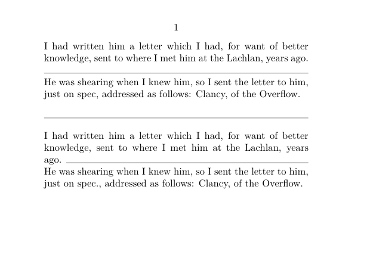

Contents
Summary
The command
\hairline
produces a thin rule
Description
A thin rule on the baseline of its own paragraph, spanning the width of the current text.
Examples
Example 1
-
\setuppapersize[A7,landscape] \starttext I had written him a letter which I had, for want of better knowledge, sent to where I met him at the Lachlan, years ago. \hairline He was shearing when I knew him, so I sent the letter to him, just on spec, addressed as follows: Clancy, of the Overflow. % a hairline is its own paragraph, % so \setupwhitespace will affect hairline spacing \setupwhitespace[big] \hairline % A \thinrule fills out the line on which it appears. I had written him a letter which I had, for want of better knowledge, sent to where I met him at the Lachlan, years ago. \thinrule\crlf He was shearing when I knew him, so I sent the letter to him, just on spec., addressed as follows: Clancy, of the Overflow. \stoptext
This gives:
- 
Notes
See also
- pack-mrl.mkiv
- \thinrule for a rule that fills out the line on which it appears.
- \fillinline and \fillinrules for 'write your answer here' lines.